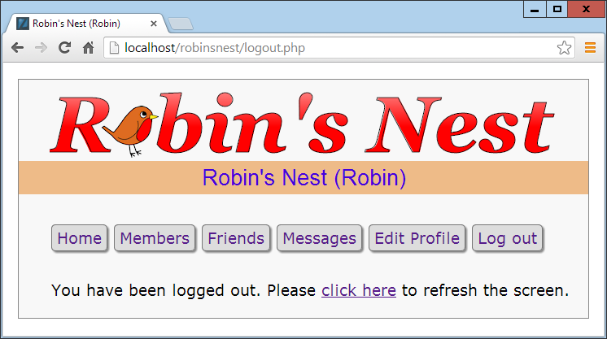

Bringing It All Together
Now that you’ve reached the end of your journey into learning the hows, whys, and
wherefores of dynamic web programming, I want to leave you with a real example
that you can sink your teeth into. In fact, it’s a collection of examples, because I’ve put
together a simple social networking project comprising all the main features you’d
expect from such a site.
Across the various files, there are examples of MySQL table creation and database
access, CSS style sheets, file inclusion, session control, DOM access, Ajax calls, event
and error handling, file uploading, image manipulation, the HTML5 canvas, and a
whole lot more.
Each example file is complete and self-contained, yet works with all the others to
build a fully working social networking site, even including a style sheet you can
modify to completely change the look and feel of the project. Being small and light,
the end product is particularly usable on mobile platforms such as a smartphone or
tablet, but will run equally well on a full-size desktop computer.
I leave it up to you to take any pieces of code you think you can use and expand on
them for your own purposes. Perhaps you may even wish to build on these files to
create a social networking site of your own.
Designing a Social Networking Site
Before writing any code, I sat down and came up with several things that I decided
were essential to such a site. These included the following:
•
A sign-up process
•
A login form
•
A logout facility
•
Session control
•
User profiles with uploaded thumbnails
•
A member directory
•
Adding members as friends
•
Public and private messaging between members
•
How to style the project
I decided to name the project
Robin’s Nest
, but you have to modify only one line of
code (in
functions.php
) to change this to a name of your choice.
On the Website
All the examples in this chapter can be found on the companion website located at
http://lpmj.net
. You can also download the examples from there to your computer by
clicking the Download Examples link. This will download an archive file called
exam‐
ples.zip
, which you should extract to a suitable location on your computer.
Of particular interest to this chapter, within the zip file you’ll find there’s a folder
called
robinsnest
, in which all the following examples have been saved with the correct
filenames required by this sample application. So you can easily copy them all to your
web development folder to try them out.
functions.php
Let’s jump right into the project, starting with
Example 26-1
,
functions.php
, the
include file of the main functions. This file contains a little more than just the func‐
tions, though, because I have added the database login details here instead of using
yet another separate file. So the first half-dozen lines of code define the host, database
name, username, and password of the database to use.
It doesn’t matter what you call the database, as long as it already exists (see
Chapter 8
for instructions on how to create a new database). Also make sure to correctly assign
a MySQL username and password to
$dbuser
and
$dbpass
. With correct values, the
subsequent two lines will open a connection to MySQL and select the database. The
last of the initial instructions sets the name of the social networking site by assigning
the value
Robin's Nest
to the variable
$appname
. If you want to change the name,
this is the place to do so.
The Functions
The project uses five main functions:
createTable
Checks whether a table already exists and, if not, creates it
queryMysql
Issues a query to MySQL, outputting an error message if it fails
destroySession
Destroys a PHP session and clears its data to log users out
sanitizeString
Removes potentially malicious code or tags from user input
showProfile
Displays a user’s image and “about me” message if he has one
All of these should be obvious in their action to you by now, with the possible excep‐
tion of
showProfile
, which looks for an image of the name
user.jpg
(where
user
is the
username of the current user), and if it finds it, displays it. It also displays any “about
me” text the user may have saved.
I have ensured that error handling is in place for all the functions that need it, so that
they can catch any typographical or other errors you may introduce, and generate
error messages. However, if you use any of this code on a production server, you will
probably want to provide your own error-handling routines to make the code more
user-friendly.
So type
Example 26-1
and save it as
functions.php
(or download it from the compan‐
ion website), and you’ll be ready to move on to the next section.
Example 26-1. functions.php
<?php
$dbhost = 'localhost'; // Unlikely to require changing
$dbname = 'robinsnest'; // Modify these...
$dbuser = 'robinsnest'; // ...variables according
$dbpass = 'rnpassword'; // ...to your installation
$appname = "Robin's Nest"; // ...and preference
$connection = new mysqli($dbhost, $dbuser, $dbpass, $dbname);
if ($connection->connect_error) die($connection->connect_error);
function createTable($name, $query)
{
queryMysql("CREATE TABLE IF NOT EXISTS $name($query)");
echo "Table '$name' created or already exists.<br>";
}
function queryMysql($query)
{
global $connection;
$result = $connection->query($query);
if (!$result) die($connection->error);
return $result;
}
function destroySession()
{
$_SESSION=array();
if (session_id() != "" || isset($_COOKIE[session_name()]))
setcookie(session_name(), '', time()-2592000, '/');
session_destroy();
}
function sanitizeString($var)
{
global $connection;
$var = strip_tags($var);
$var = htmlentities($var);
$var = stripslashes($var);
return $connection->real_escape_string($var);
}
function showProfile($user)
{
if (file_exists("$user.jpg"))
echo "<img src='$user.jpg' style='float:left;'>";
$result = queryMysql("SELECT * FROM profiles WHERE user='$user'");
if ($result->num_rows)
{
$row = $result->fetch_array(MYSQLI_ASSOC);
echo stripslashes($row['text']) . "<br style='clear:left;'><br>";
}
}
?>
If you read a previous edition of this book, in which these examples
used the old
mysql
extension, you should note that in order to ref‐
erence the MySQL database using
mysqli
, you must apply the
global
keyword in the
queryMysql
and
sanitizeString
functions,
to allow them to use the value in
$connection
.
header.php
For uniformity, each page of the project needs to have access to the same set of fea‐
tures. Therefore, I placed these things in
Example 26-2
,
header.php
. This is the file
that is actually included by the other files and it includes
functions.php
. This means
that only a single
require_once
is needed in each file.
header.php
starts by calling the function
session_start
. As you’ll recall from
Chap‐
ter 12
, this sets up a session that will remember certain values we want stored across
different PHP files.
With the session started, the program then checks whether the session variable
user
is currently assigned a value. If so, a user has logged in and the variable
$loggedin
is
set to
TRUE
.
After the main setup code in which a style sheet is loaded, a canvas element is created
for the logo, and a div is also created. The file
javascript.js
(see
Example 26-14
, later
on) is loaded to pull in the
O
,
S
, and
C
functions; these would normally be in the
OSC.js
file, but to keep the number of files down I’ve added them to the JavaScript
used to create the logo.
Using the value of
$loggedin
, an
if
block displays one of two sets of menus. The
non-logged-in set simply offers options of Home, Sign up, and Log in, whereas the
logged-in version offers full access to the project’s features. Additionally, if a user is
logged in, his or her username is appended in brackets to the page title and placed
after the main heading. We can freely refer to
$user
wherever we want to put in the
name, because if the user is not logged in, that variable is empty and will have no
effect on the output.
The styling applied to this file is in the file
styles.css
(
Example 26-13
, detailed at the
end of this chapter) and includes creating a wide heading with a colored background,
and turning the links in the lists to rounded buttons.
Example 26-2. header.php
<?php
session_start();
echo "<!DOCTYPE html>\n<html><head>";
require_once 'functions.php';
$userstr = ' (Guest)';
if (isset($_SESSION['user']))
{
$user = $_SESSION['user'];
$loggedin = TRUE;
$userstr = " ($user)";
}
else $loggedin = FALSE;
echo "<title>$appname$userstr</title><link rel='stylesheet' " .
"href='styles.css' type='text/css'>" .
"</head><body><center><canvas id='logo' width='624' " .
"height='96'>$appname</canvas></center>" .
"<div class='appname'>$appname$userstr</div>" .
"<script src='javascript.js'></script>";
if ($loggedin)
echo "<br ><ul class='menu'>" .
"<li><a href='members.php?view=$user'>Home</a></li>" .
"<li><a href='members.php'>Members</a></li>" .
"<li><a href='friends.php'>Friends</a></li>" .
"<li><a href='messages.php'>Messages</a></li>" .
"<li><a href='profile.php'>Edit Profile</a></li>" .
"<li><a href='logout.php'>Log out</a></li></ul><br>";
else
echo ("<br><ul class='menu'>" .
"<li><a href='index.php'>Home</a></li>" .
"<li><a href='signup.php'>Sign up</a></li>" .
"<li><a href='login.php'>Log in</a></li></ul><br>" .
"<span class='info'>⇒ You must be logged in to " .
"view this page.</span><br><br>");
?>
Using the
<br>
tag, as in the preceding example, is a quick and
dirty way of creating spacing in page layout. In this instance it
works well, but generally you will probably want to use CSS mar‐
gins to fine-tune the spacing around elements.
setup.php
With the pair of included files written, it’s now time to set up the MySQL tables they
will use. We do this with
Example 26-3
,
setup.php
, which you should type and load
into your browser before calling up any other files; otherwise, you’ll get numerous
MySQL errors.
The tables created are short and sweet, and have the following names and columns:
•
members
: username
user
(indexed), password
pass
•
messages
: ID
id
(indexed), author
auth
(indexed), recipient
recip
, message type
pm
, message
message
•
friends
: username
user
(indexed), friend’s username
friend
•
profiles
: username
user
(indexed), “about me”
text
Because the function
createTable
first checks whether a table already exists, this
program can be safely called multiple times without generating any errors.
It is very likely that you will need to add many more columns to these tables if you
choose to expand on this project. If so, you may need to issue a MySQL
DROP TABLE
command before re-creating a table.
Example 26-3. setup.php
<!DOCTYPE html>
<html>
<head>
<title>Setting up database</title>
</head>
<body>
<h3>Setting up...</h3>
<?php
require_once 'functions.php';
createTable('members',
'user VARCHAR(16),
pass VARCHAR(16),
INDEX(user(6))');
createTable('messages',
'id INT UNSIGNED AUTO_INCREMENT PRIMARY KEY,
auth VARCHAR(16),
recip VARCHAR(16),
pm CHAR(1),
time INT UNSIGNED,
message VARCHAR(4096),
INDEX(auth(6)),
INDEX(recip(6))');
createTable('friends',
'user VARCHAR(16),
friend VARCHAR(16),
INDEX(user(6)),
INDEX(friend(6))');
createTable('profiles',
'user VARCHAR(16),
text VARCHAR(4096),
INDEX(user(6))');
?>
<br>...done.
</body>
</html>
For this example to work, you must first ensure that you have
already created the database specified in the variable
$dbname
in
Example 26-1
, and also have granted access to it by the user given
the name in
$dbuser
, with the password in
$dbpass
.
index.php
This file is a trivial file but necessary nonetheless to give the project a home page. All
it does is display a simple welcome message. In a finished application, this would be
where you sell the virtues of your site to encourage sign-ups.
Incidentally, seeing as all the MySQL tables have been created and the include files
saved, you can now load
Example 26-4
,
index.php
, into your browser to get your first
peek at the new application. It should look like
Figure 26-1
.
Example 26-4. index.php
<?php
require_once 'header.php';
echo "<br><span class='main'>Welcome to $appname,";
if ($loggedin) echo " $user, you are logged in.";
else echo ' please sign up and/or log in to join in.';
?>
</span><br><br>
</body>
</html>

Figure 26-1. The main page of the site
signup.php
Now
we
need
a
module
to
enable
users
to
join
the
new
network,
and
that’s
Example 26-5
,
signup.php
. This is a slightly longer program, but you’ve seen all its
parts before.
Let’s start by looking at the end block of HTML. This is a simple form that allows a
username and password to be entered. But note the use of the empty
span
given the
id
of
'info'
. This will be the destination of the Ajax call in this program that checks
whether a desired username is available. See
Chapter 18
for a complete description of
how this works.
Checking for Username Availability
Now go back to the program start and you’ll see a block of JavaScript that starts with
the function
checkUser
. This is called by the JavaScript
onBlur
event when focus is
removed from the username field of the form. First it sets the contents of the span I
mentioned (with the
id
of
info
) to an empty string, which clears it in case it previ‐
ously had a value.
Next a request is made to the program
checkuser.php
, which reports whether the user‐
name
user
is available. The returned result of the Ajax call, a friendly message, is then
placed in the
info
span.
After the JavaScript section comes some PHP code that you should recognize from
the
Chapter 16
discussion of form validation. This section also uses the
sanitize
String
function to remove potentially malicious characters before looking up the
username in the database and, if it’s not already taken, inserting the new username
$user
and password
$pass
.
Logging In
Upon successfully signing up, the user is then prompted to log in. A more fluid
response at this point might be to automatically log in a newly created user, but, as I
don’t want to overly complicate the code, I have kept the sign-up and login modules
separate from each other. You can easily implement this if you want to, however.
This file uses the CSS class
fieldname
to arrange the form fields, aligning them neatly
under each other in columns. When loaded into a browser (and in conjunction with
checkuser.php
, shown later), this program will look like
Figure 26-2
, where you can
see that the Ajax call has identified that the username
Robin
is available. If you would
like the password field to show only asterisks, change its type from
text
to
password
.
Example 26-5. signup.php
<?php
require_once 'header.php';
echo <<<_END
<script>
function checkUser(user)
{
if (user.value == '')
{
O('info').innerHTML = ''
return
}
params = "user=" + user.value
request = new ajaxRequest()
request.open("POST", "checkuser.php", true)
request.setRequestHeader("Content-type",
"application/x-www-form-urlencoded")
request.setRequestHeader("Content-length", params.length)
request.setRequestHeader("Connection", "close")
request.onreadystatechange = function()
{
if (this.readyState == 4)
if (this.status == 200)
if (this.responseText != null)
O('info').innerHTML = this.responseText
}
request.send(params)
}
function ajaxRequest()
{
try { var request = new XMLHttpRequest() }
catch(e1) {
try { request = new ActiveXObject("Msxml2.XMLHTTP") }
catch(e2) {
try { request = new ActiveXObject("Microsoft.XMLHTTP") }
catch(e3) {
request = false
} } }
return request
}
</script>
<div class='main'><h3>Please enter your details to sign up</h3>
_END;
$error = $user = $pass = "";
if (isset($_SESSION['user'])) destroySession();
if (isset($_POST['user']))
{
$user = sanitizeString($_POST['user']);
$pass = sanitizeString($_POST['pass']);
if ($user == "" || $pass == "")
$error = "Not all fields were entered<br><br>";
else
{
$result = queryMysql("SELECT * FROM members WHERE user='$user'");
if ($result->num_rows)
$error = "That username already exists<br><br>";
else
{
queryMysql("INSERT INTO members VALUES('$user', '$pass')");
die("<h4>Account created</h4>Please Log in.<br><br>");
}
}
}
echo <<<_END
<form method='post' action='signup.php'>$error
<span class='fieldname'>Username</span>
<input type='text' maxlength='16' name='user' value='$user'
onBlur='checkUser(this)'><span id='info'></span><br>
<span class='fieldname'>Password</span>
<input type='text' maxlength='16' name='pass'
value='$pass'><br>
_END;
?>
<span class='fieldname'> </span>
<input type='submit' value='Sign up'>
</form></div><br>
</body>
</html>
Figure 26-2. The sign-up page
On a production server, I wouldn’t recommend storing user pass‐
words in the clear as I’ve done here (for reasons of space and sim‐
plicity). Instead, you should salt them and store them as one-way
hash strings. See
Chapter 13
for more details on how to do this.
checkuser.php
To go with
signup.php
, here’s
Example 26-6
,
checkuser.php
, which looks up a username
in the database and returns a string indicating whether it has already been taken.
Because it relies on the functions
sanitizeString
and
queryMysql
, the program first
includes the file
functions.php
.
Then, if the
$_POST
variable
user
has a value, the function looks it up in the database
and, depending on whether it exists as a username, outputs either “Sorry, this user‐
name
is
taken”
or
“
This
username
is
available.”
Just
checking
the
function
mysql_num_rows
against the result is sufficient for this, as it will return
0
for not
found, or
1
if it is found.
The HTML entities
✘
and
✔
are also used to preface the string with
either a cross or a checkmark.
Example 26-6. checkuser.php
<?php
require_once 'functions.php';
if (isset($_POST['user']))
{
$user = sanitizeString($_POST['user']);
$result = queryMysql("SELECT * FROM members WHERE user='$user'");
if ($result->num_rows)
echo "<span class='taken'> ✘ " .
"This username is taken</span>";
else
echo "<span class='available'> ✔ " .
"This username is available</span>";
}
?>
login.php
With users now able to sign up to the site,
Example 26-7
,
login.php
, provides the code
needed to let them log in. Like the sign-up page, it features a simple HTML form and
some basic error checking, as well as using
sanitizeString
before querying the
MySQL database.
The main thing to note here is that, upon successful verification of the username and
password, the session variables
user
and
pass
are given the username and password
values. As long as the current session remains active, these variables will be accessible
by all the programs in the project, allowing them to automatically provide access to
logged-in users.
You may be interested in the use of the
die
function upon successfully logging in.
This is there because it combines an
echo
and an
exit
command in one, thus saving a
line of code. For styling, this (and most of the files) applies the class
main
to indent
the content from the left-hand edge.
When you call this program up in your browser, it should look like
Figure 26-3
. Note
how the input type of
password
has been used here to mask the password with aster‐
isks to prevent it from being viewed by anyone looking over the user’s shoulder.
Example 26-7. login.php
<?php
require_once 'header.php';
echo "<div class='main'><h3>Please enter your details to log in</h3>";
$error = $user = $pass = "";
if (isset($_POST['user']))
{
$user = sanitizeString($_POST['user']);
$pass = sanitizeString($_POST['pass']);
if ($user == "" || $pass == "")
$error = "Not all fields were entered<br>";
else
{
$result = queryMySQL("SELECT user,pass FROM members
WHERE user='$user' AND pass='$pass'");
if ($result->num_rows == 0)
{
$error = "<span class='error'>Username/Password
invalid</span><br><br>";
}
else
{
$_SESSION['user'] = $user;
$_SESSION['pass'] = $pass;
die("You are now logged in. Please <a href='members.php?view=$user'>" .
"click here</a> to continue.<br><br>");
}
}
}
echo <<<_END
<form method='post' action='login.php'>$error
<span class='fieldname'>Username</span><input type='text'
maxlength='16' name='user' value='$user'><br>
<span class='fieldname'>Password</span><input type='password'
maxlength='16' name='pass' value='$pass'>
_END;
?>
<br>
<span class='fieldname'> </span>
<input type='submit' value='Login'>
</form><br></div>
</body>
</html>

Figure 26-3. The login page
profile.php
One of the first things that new users may want to do after signing up and logging
in is to create a profile, which can be done via
Example 26-8
,
profile.php
. I think you’ll
find some interesting code here, such as routines to upload, resize, and sharpen
images.
Let’s start by looking at the main HTML at the end of the code. This is like the forms
you’ve just seen, but this time it has the parameter
enctype='multipart/form-data'
.
This allows us to send more than one type of data at a time, enabling the posting of
an image as well as some text. There’s also an input type of
file
, which creates a
Browse button that a user can press to select a file to be uploaded.
When the form is submitted, the code at the start of the program is executed. The
first thing it does is ensure that a user is logged in before allowing program execution
to proceed. Only then is the page heading displayed.
Adding the “About Me” Text
Then the Post variable
text
is checked to see whether some text was posted to the
program. If so, it is sanitized and all long whitespace sequences (including returns
and line feeds) are replaced with a single space. This function incorporates a double
security check, ensuring that the user actually exists in the database and that no
attempted hacking can succeed before inserting this text into the database, where it
will become the user’s “about me” details.
If no text was posted, the database is queried to see whether any text already exists in
order to prepopulate the
textarea
for the user to edit it.
Adding a
Profile Image
Next we move on to the section where the
$_FILES
system variable is checked to see
whether an image has been uploaded. If so, a string variable called
$saveto
is created,
based on the user’s username followed by the extension
.jpg
. For example, user Jill will
cause
$saveto
to have the value
Jill.jpg
. This is the file where the uploaded image will
be saved for use in the user’s profile.
Following this, the uploaded image type is examined and is accepted only if it is a
jpeg
,
png
, or
gif
image. Upon success, the variable
$src
is populated with the uploaded
image using one of the
imagecreatefrom
functions according to the image type
uploaded. The image is now in a raw format that PHP can process. If the image is not
of an allowed type, the flag
$typeok
is set to
FALSE
, preventing the final section of
image upload code from being processed.
Processing the Image
First, we store the image’s dimensions in
$w
and
$h
using the following statement,
which is a quick way of assigning values from an array to separate variables:
list($w, $h) = getimagesize($saveto);
Then, using the value of
$max
(which is set to
100
), we calculate new dimensions that
will result in a new image of the same ratio, but with no dimension greater than 100
pixels. This results in giving the variables
$tw
and
$th
the new values needed. If you
want smaller or larger thumbnails, simply change the value of
$max
accordingly.
Next, the function
imagecreatetruecolor
is called to create a new, blank canvas
$tw
wide and
$th
high in
$tmp
. Then
imagecopyresampled
is called to resample the image
from
$src
, to the new
$tmp
. Sometimes resampling images can result in a slightly
blurred copy, so the next piece of code uses the
imageconvolution
function to
sharpen the image up a bit.
Finally, the image is saved as a
jpeg
file in the location defined by the variable
$saveto
, after which we remove both the original and the resized image canvases
from memory using the
imagedestroy
function, returning the memory that was
used.
Displaying the Current
Profile
Last but not least, so that the user can see what the current profile looks like before
editing it, the
showProfile
function from
functions.php
is called prior to outputting
the form HTML. If no profile exists yet, nothing will be displayed.
When a profile image is displayed, CSS is applied to it to provide a border, shadow,
and a margin to its right—to separate the profile text from the image. The result of
loading
Example 26-8
into a browser is shown in
Figure 26-4
, where you can see that
the
textarea
has been prepopulated with the “about me” text.
Example 26-8.
profile.php
<?php
require_once 'header.php';
if (!$loggedin) die();
echo "<div class='main'><h3>Your Profile</h3>";
$result = queryMysql("SELECT * FROM profiles WHERE user='$user'");
if (isset($_POST['text']))
{
$text = sanitizeString($_POST['text']);
$text = preg_replace('/\s\s+/', ' ', $text);
if ($result->num_rows)
queryMysql("UPDATE profiles SET text='$text' where user='$user'");
else queryMysql("INSERT INTO profiles VALUES('$user', '$text')");
}
else
{
if ($result->num_rows)
{
$row = $result->fetch_array(MYSQLI_ASSOC);
$text = stripslashes($row['text']);
}
else $text = "";
}
$text = stripslashes(preg_replace('/\s\s+/', ' ', $text));
if (isset($_FILES['image']['name']))
{
$saveto = "$user.jpg";
move_uploaded_file($_FILES['image']['tmp_name'], $saveto);
$typeok = TRUE;
switch($_FILES['image']['type'])
{
case "image/gif": $src = imagecreatefromgif($saveto); break;
case "image/jpeg": // Both regular and progressive jpegs
case "image/pjpeg": $src = imagecreatefromjpeg($saveto); break;
case "image/png": $src = imagecreatefrompng($saveto); break;
default: $typeok = FALSE; break;
}
if ($typeok)
{
list($w, $h) = getimagesize($saveto);
$max = 100;
$tw = $w;
$th = $h;
if ($w > $h && $max < $w)
{
$th = $max / $w * $h;
$tw = $max;
}
elseif ($h > $w && $max < $h)
{
$tw = $max / $h * $w;
$th = $max;
}
elseif ($max < $w)
{
$tw = $th = $max;
}
$tmp = imagecreatetruecolor($tw, $th);
imagecopyresampled($tmp, $src, 0, 0, 0, 0, $tw, $th, $w, $h);
imageconvolution($tmp, array(array(-1, -1, -1),
array(-1, 16, -1), array(-1, -1, -1)), 8, 0);
imagejpeg($tmp, $saveto);
imagedestroy($tmp);
imagedestroy($src);
}
}
showProfile($user);
echo <<<_END
<form method='post' action='profile.php' enctype='multipart/form-data'>
<h3>Enter or edit your details and/or upload an image</h3>
<textarea name='text' cols='50' rows='3'>$text</textarea><br>
_END;
?>
Image: <input type='file' name='image' size='14'>
<input type='submit' value='Save Profile'>
</form></div><br>
</body>
</html>

Figure 26-4. Editing a user profile
members.php
Using
Example 26-9
,
members.php
, your users will be able to find other members
and choose to add them as friends (or drop them if they are already friends). This
program has two modes. The first lists all members and their relationships to you,
and the second shows a user’s profile.
Viewing a User’s
Profile
The code for the latter mode comes first, where a test is made for the Get variable
view
. If it exists, a user wants to view someone’s profile, so the program does that
using the
showProfile
function, along with providing a couple of links to the user’s
friends and messages.
Adding and Dropping Friends
After that, the two Get variables,
add
and
remove
, are tested. If one or the other has a
value, it will be the username of a user to either add or drop as a friend. We achieve
this by looking up the user in the MySQL
friends
table and either inserting a friend
username or removing it from the table.
And, of course, every posted variable is first passed through
sanitizeString
to
ensure that it is safe to use with MySQL.
Listing All Members
The final section of code issues a SQL query to list all usernames. The code places the
number returned in the variable
$num
before outputting the page heading.
A
for
loop then iterates through each and every member, fetching their details and
then looking them up in the
friends
table to see if they are either being followed by
or a follower of the user. If someone is both a follower and a followee, she is classed as
a mutual friend.
The variable
$t1
is nonzero when the user is following another member, and
$t2
is
nonzero when another member is following the user. Depending on these values, text
is displayed after each username, showing the relationship (if any) to the current user.
Icons are also displayed to show the relationships. A double pointing arrow means
that the users are mutual friends. A left-pointing arrow indicates the user is following
another member. And a right-pointing arrow indicates that another member is fol‐
lowing the user.
Finally, depending on whether the user is following another member, a link is pro‐
vided to either add or drop that member as a friend.
When you call
Example 26-9
up in a browser, it will look like
Figure 26-5
. See how
the user is invited to “follow” a nonfollowing member, but if the member is already
following the user, a “recip” link to reciprocate the friendship is offered. In the case of
a user already following another member, the user can select “drop” to end the follow‐
ing.
Example 26-9. members.php
<?php
require_once 'header.php';
if (!$loggedin) die();
echo "<div class='main'>";
if (isset($_GET['view']))
{
$view = sanitizeString($_GET['view']);
if ($view == $user) $name = "Your";
else $name = "$view's";
echo "<h3>$name Profile</h3>";
showProfile($view);
echo "<a class='button' href='messages.php?view=$view'>" .
"View $name messages</a><br><br>";
die("</div></body></html>");
}
if (isset($_GET['add']))
{
$add = sanitizeString($_GET['add']);
$result = queryMysql("SELECT * FROM friends WHERE user='$add'
AND friend='$user'");
if (!$result->num_rows)
queryMysql("INSERT INTO friends VALUES ('$add', '$user')");
}
elseif (isset($_GET['remove']))
{
$remove = sanitizeString($_GET['remove']);
queryMysql("DELETE FROM friends WHERE user='$remove' AND friend='$user'");
}
$result = queryMysql("SELECT user FROM members ORDER BY user");
$num = $result->num_rows;
echo "<h3>Other Members</h3><ul>";
for ($j = 0 ; $j < $num ; ++$j)
{
$row = $result->fetch_array(MYSQLI_ASSOC);
if ($row['user'] == $user) continue;
echo "<li><a href='members.php?view=" .
$row['user'] . "'>" . $row['user'] . "</a>";
$follow = "follow";
$result1 = queryMysql("SELECT * FROM friends WHERE
user='" . $row['user'] . "' AND friend='$user'");
$t1 = $result1->num_rows;
$result1 = queryMysql("SELECT * FROM friends WHERE
user='$user' AND friend='" . $row['user'] . "'");
$t2 = $result1->num_rows;
if (($t1 + $t2) > 1) echo " ↔ is a mutual friend";
elseif ($t1) echo " ← you are following";
elseif ($t2) { echo " → is following you";
$follow = "recip"; }
if (!$t1) echo " [<a href='members.php?add=" .
$row['user'] . "'>$follow</a>]";
else echo " [<a href='members.php?remove=" .
$row['user'] . "'>drop</a>]";
}
?>
</ul></div>
</body>
</html>

Figure 26-5. Using the members module
On a production server, there could be thousands or even hun‐
dreds of thousands of users, so you would probably substantially
modify this program to include searching the “about me” text, sup‐
port paging of the output a screen at a time, and so on.
friends.php
The module that shows a user’s friends and followers is
Example 26-10
,
friends.php
.
This interrogates the
friends
table just like the
members.php
program, but only for a
single user. It then shows all of that user’s mutual friends and followers along with the
people he is following.
All the followers are saved into an array called
$followers
, and all the people being
followed are placed in an array called
$following
. Then a neat piece of code is used
to extract all those who are both following and followed by the user, like this:
$mutual = array_intersect($followers, $following);
The
array_intersect
function extracts all members common to both arrays and
returns a new array containing only those people. This array is then stored in
$mutual
. Now it’s possible to use the
array_diff
function for each of the
$followers
and
$following
arrays to keep only those people who are
not
mutual friends, like
this:
$followers = array_diff($followers, $mutual);
$following = array_diff($following, $mutual);
This results in the array
$mutual
containing only mutual friends,
$followers
con‐
taining only followers (and no mutual friends), and
$following
containing only peo‐
ple being followed (and no mutual friends).
Now that we’re armed with these arrays, it’s a simple matter to separately display each
category of members, as can be seen in
Figure 26-6
. The PHP
sizeof
function
returns the number of elements in an array; here I use it just to trigger code when the
size is nonzero (that is, friends of that type exist). Note how, by using the variables
$name1
,
$name2
, and
$name3
in the relevant places, the code can tell when you’re look‐
ing at your own friends list, using the words
Your
and
You are
, instead of simply dis‐
playing the username. The commented line can be uncommented if you wish to
display the user’s profile information on this screen.
Example 26-10. friends.php
<?php
require_once 'header.php';
if (!$loggedin) die();
if (isset($_GET['view'])) $view = sanitizeString($_GET['view']);
else $view = $user;
if ($view == $user)
{
$name1 = $name2 = "Your";
$name3 = "You are";
}
else
{
$name1 = "<a href='members.php?view=$view'>$view</a>'s";
$name2 = "$view's";
$name3 = "$view is";
}
echo "<div class='main'>";
// Uncomment this line if you wish the user's profile to show here
// showProfile($view);
$followers = array();
$following = array();
$result = queryMysql("SELECT * FROM friends WHERE user='$view'");
$num = $result->num_rows;
for ($j = 0 ; $j < $num ; ++$j)
{
$row = $result->fetch_array(MYSQLI_ASSOC);
$followers[$j] = $row['friend'];
}
$result = queryMysql("SELECT * FROM friends WHERE friend='$view'");
$num = $result->num_rows;
for ($j = 0 ; $j < $num ; ++$j)
{
$row = $result->fetch_array(MYSQLI_ASSOC);
$following[$j] = $row['user'];
}
$mutual = array_intersect($followers, $following);
$followers = array_diff($followers, $mutual);
$following = array_diff($following, $mutual);
$friends = FALSE;
if (sizeof($mutual))
{
echo "<span class='subhead'>$name2 mutual friends</span><ul>";
foreach($mutual as $friend)
echo "<li><a href='members.php?view=$friend'>$friend</a>";
echo "</ul>";
$friends = TRUE;
}
if (sizeof($followers))
{
echo "<span class='subhead'>$name2 followers</span><ul>";
foreach($followers as $friend)
echo "<li><a href='members.php?view=$friend'>$friend</a>";
echo "</ul>";
$friends = TRUE;
}
if (sizeof($following))
{
echo "<span class='subhead'>$name3 following</span><ul>";
foreach($following as $friend)
echo "<li><a href='members.php?view=$friend'>$friend</a>";
echo "</ul>";
$friends = TRUE;
}
if (!$friends) echo "<br>You don't have any friends yet.<br><br>";
echo "<a class='button' href='messages.php?view=$view'>" .
"View $name2 messages</a>";
?>
</div><br>
</body>
</html>
Figure 26-6. Displaying a user’s friends and followers
messages.php
The last of the main modules is
Example 26-11
,
messages.php
. The program starts by
checking whether a message has been posted in variable
text
. If so, it is inserted into
the
messages
table. At the same time, the value of
pm
is also stored. This indicates
whether a message is private or public. A
0
represents a public message, and
1
is pri‐
vate.
Next, the user’s profile and a form for entering a message are displayed, along with
radio buttons to choose between a private or public message. After this, all the mes‐
sages are shown, depending on whether they are private or public. If they are public,
all users can see them, but private messages are visible only to the sender and recipi‐
ent. This is all handled by a couple of queries to the MySQL database. Additionally,
when a message is private, it is introduced by the word
whispered
and shown in italic.
Finally, the program displays a couple of links to refresh the messages (in case
another user has posted one in the meantime) and to view the user’s friends. The trick
using the variables
$name1
and
$name2
is again used so that when you view your own
profile, the word
Your
is displayed instead of the username.
You can see the result of viewing this program with a browser in
Figure 26-7
. Note
how users viewing their own messages are provided with links to erase any they don’t
want.
Example 26-11. messages.php
<?php
require_once 'header.php';
if (!$loggedin) die();
if (isset($_GET['view'])) $view = sanitizeString($_GET['view']);
else $view = $user;
if (isset($_POST['text']))
{
$text = sanitizeString($_POST['text']);
if ($text != "")
{
$pm = substr(sanitizeString($_POST['pm']),0,1);
$time = time();
queryMysql("INSERT INTO messages VALUES(NULL, '$user',
'$view', '$pm', $time, '$text')");
}
}
if ($view != "")
{
if ($view == $user) $name1 = $name2 = "Your";
else
{
$name1 = "<a href='members.php?view=$view'>$view</a>'s";
$name2 = "$view's";
}
echo "<div class='main'><h3>$name1 Messages</h3>";
showProfile($view);
echo <<<_END
<form method='post' action='messages.php?view=$view'>
Type here to leave a message:<br>
<textarea name='text' cols='40' rows='3'></textarea><br>
Public<input type='radio' name='pm' value='0' checked='checked'>
Private<input type='radio' name='pm' value='1'>
<input type='submit' value='Post Message'></form><br>
_END;
if (isset($_GET['erase']))
{
$erase = sanitizeString($_GET['erase']);
queryMysql("DELETE FROM messages WHERE id=$erase AND recip='$user'");
}
$query = "SELECT * FROM messages WHERE recip='$view' ORDER BY time DESC";
$result = queryMysql($query);
$num = $result->num_rows;
for ($j = 0 ; $j < $num ; ++$j)
{
$row = $result->fetch_array(MYSQLI_ASSOC);
if ($row['pm'] == 0 || $row['auth'] == $user || $row['recip'] == $user)
{
echo date('M jS \'y g:ia:', $row['time']);
echo " <a href='messages.php?view=" . $row['auth'] . "'>" .
$row['auth']. "</a> ";
if ($row['pm'] == 0)
echo "wrote: "" . $row['message'] . "" ";
else
echo "whispered: <span class='whisper'>"" .
$row['message'] . ""</span> ";
if ($row['recip'] == $user)
echo "[<a href='messages.php?view=$view" .
"&erase=" . $row['id'] . "'>erase</a>]";
echo "<br>";
}
}
}
if (!$num) echo "<br><span class='info'>No messages yet</span><br><br>";
echo "<br><a class='button' href='messages.php?view=$view'>Refresh messages</a>";
?>
</div><br>
</body>
</html>

Figure 26-7. The messaging module
logout.php
The final ingredient in our social networking recipe is
Example 26-12
,
logout.php
, the
logout page that closes a session and deletes any associated data and cookies. The
result of calling up this program is shown in
Figure 26-8
, where the user is now asked
to click a link that will take her to the un-logged-in home page and remove the
logged-in links from the top of the screen. Of course, you could write a JavaScript or
PHP redirect to do this (probably a good idea if you wish to keep logout looking
clean).
Example 26-12. logout.php
<?php
require_once 'header.php';
if (isset($_SESSION['user']))
{
destroySession();
echo "<div class='main'>You have been logged out. Please " .
"<a href='index.php'>click here</a> to refresh the screen.";
}
else echo "<div class='main'><br>" .
"You cannot log out because you are not logged in";
?>
<br><br></div>
</body>
</html>

Figure 26-8. The logout page
styles.css
The style sheet used for this project is shown in
Example 26-13
. There are a number
of sets of declarations, as follows:
*
Sets the default font family and size for the project using the universal selector.
body
Sets the width of the project window, centers it horizontally, specifies a background
color, and gives it a border.
html
Sets the background color of the HTML section.
img
Gives all images a border, shadow, and a righthand margin.
li a
and
.button
Remove underlines from hyperlinks in all
<a>
tags that are within a
<li>
element,
and all elements employing the
button
class.
li a:hover
and
.button:hover
Sets the color in which
<li>
elements and the
button
class should display text when
hovered over.
.appname
Sets the properties for the heading (which uses the
appname
class), including center‐
ing, background and text colors, the font family and size, and the padding.
.fieldname
Sets the width of elements using the
fieldname
class by first floating them.
.main
This class applies an indent to elements that use it.
.info
This class is used for displaying important information. It sets a background and
foreground text color, applies a border and padding, and indents elements that
employ it.
.menu li
and
.button
These declarations ensure that all
<li>
elements and the
button
class display inline,
have padding applied, and include a border, a background and foreground text color,
a right margin, rounded borders, and a shadow—resulting in a button effect.
.subhead
Emphasizes sections of text.
.taken
,
.available
,
.error
, and
.whisper
These declarations set the colors and font styles to be used for displaying different
types of information.
#logo
These rules style the logo text as a fallback in case a non-HTML5 browser is in use
and the canvas logo doesn’t get created.
Example 26-13. styles.css
* {
font-family:verdana,sans-serif;
font-size :14pt;
}
body {
width :700px;
margin :20px auto;
background:#f8f8f8;
border :1px solid #888;
}
html {
background:#fff
}
img {
border :1px solid black;
margin-right :15px;
-moz-box-shadow :2px 2px 2px #888;
-webkit-box-shadow:2px 2px 2px #888;
box-shadow :2px 2px 2px #888;
}
li a, .button {
text-decoration:none;
}
li a:hover, .button:hover {
color:green;
}
.appname {
text-align :center;
background :#eb8;
color :#40d;
font-family:helvetica;
font-size :20pt;
padding :4px;
}
.fieldname {
float:left;
width:120px;
}
.main {
margin-left:40px;
}
.info {
background :lightgreen;
color :blue;
border :1px solid green;
padding :5px 10px;
margin-left:40px;
}
.menu li, .button {
display :inline;
padding :4px 6px;
border :1px solid #777;
background :#ddd;
color :#d04;
margin-right :8px;
border-radius :5px;
-moz-box-shadow :2px 2px 2px #888;
-webkit-box-shadow:2px 2px 2px #888;
box-shadow :2px 2px 2px #888;
}
.subhead {
font-weight:bold;
}
.taken, .error {
color:red;
}
.available {
color:green;
}
.whisper {
font-style:italic;
color :#006600;
}
#logo {
font-family:Georgia;
font-weight:bold;
font-style :italic;
font-size :97px;
}
javascript.js
Finally, there’s the JavaScript file (see
Example 26-14
), which contains the
O
,
S
, and
C
functions used throughout this book, along with some code to draw the logo for the
site using an HTML5 canvas, as explained in
Chapter 23
.
Example 26-14. javascript.js
canvas = O('logo')
context = canvas.getContext('2d')
context.font = 'bold italic 97px Georgia'
context.textBaseline = 'top'
image = new Image()
image.src = 'robin.gif'
image.onload = function()
{
gradient = context.createLinearGradient(0, 0, 0, 89)
gradient.addColorStop(0.00, '#faa')
gradient.addColorStop(0.66, '#f00')
context.fillStyle = gradient
context.fillText( "R bin's Nest", 0, 0)
context.strokeText("R bin's Nest", 0, 0)
context.drawImage(image, 64, 32)
}
function O(obj)
{
if (typeof obj == 'object') return obj
else return document.getElementById(obj)
}
function S(obj)
{
return O(obj).style
}
function C(name)
{
var elements = document.getElementsByTagName('*')
var objects = []
for (var i = 0 ; i < elements.length ; ++i)
if (elements[i].className == name)
objects.push(elements[i])
return objects
}
And that, as they say, is that. If you write anything based on this code or any other
examples in this book, or have gained in any other way from it, then I am glad to have
been of help and thank you for reading this book.
But before you go and try out your newly learned skills on the Web at large, please
browse through the appendixes that follow, as there’s a lot of additional information
there you should find useful.